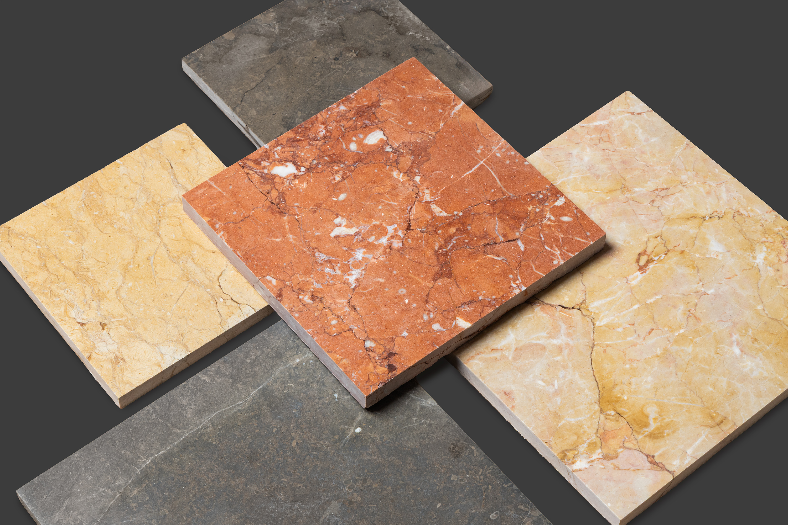
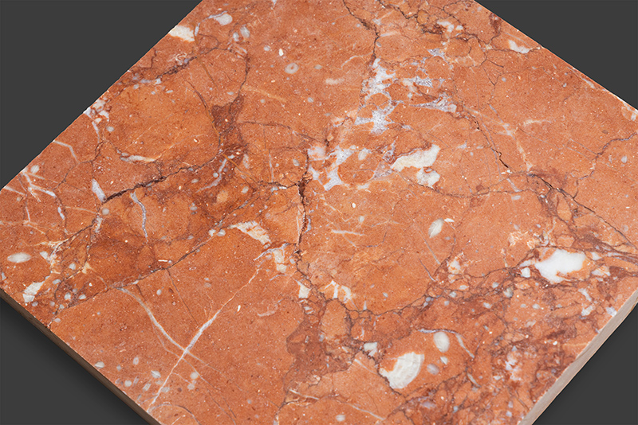
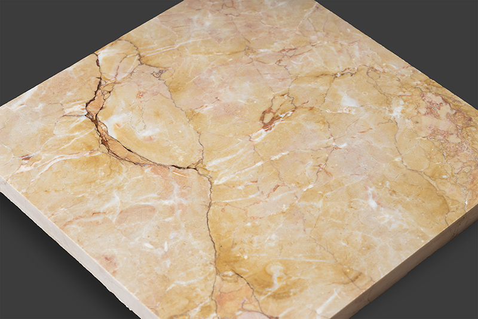
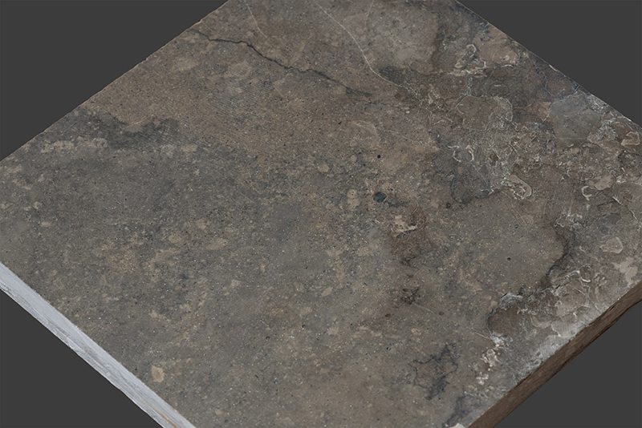

Portfolio sale of concession-backed limestone assets featuring Rosso, Giallo, and grey decorative stone profiles, supported by established reserves, scalable annual production, and long-dated tenure in a Mediterranean export market.
This opportunity is best presented as a premium limestone portfolio rather than a standard quarry disposal. The asset base combines red, yellow-brown, and grey decorative limestone with additional construction-stone potential, creating a broader monetization profile across architectural and industrial end-markets.
The portfolio combines decorative limestone profiles with long-dated concessions and established reserves, creating a platform suitable for both industrial operators and investment-oriented buyers seeking exposure to the natural stone sector.
“A concession-backed limestone portfolio with decorative Rosso and Giallo exposure, supported by long-term reserves and scalable production potential.”
The portfolio includes multiple fields with differentiated material profiles. Public-facing materials remain high level, while field-level detail, technical studies, and concession documents can be released during a managed process.
Primary value driver of the portfolio, comprising red and yellow-brown limestone with architectural positioning, stronger visual identity, and export-friendly commercial appeal.
Complementary field profile supporting broader marketability through grey decorative stone and additional construction-related stone applications.
The material mix enables a differentiated sales story: Rosso for premium architectural identity, Giallo for broader decorative use, and grey limestone for complementary design and construction applications.


Pink-red to ochre decorative limestone suitable for premium interior and exterior architectural use, with the strongest branding potential within the portfolio.

Yellow-brown limestone with broad design and construction relevance, offering a commercially versatile decorative profile.

Grey-toned limestone suited to selected cladding, paving, and design-led natural stone projects, while also supporting wider resource utilization.
The portfolio combines established reserves, long-dated concession security, and commercially relevant limestone profiles, offering potential for both industrial-scale extraction and higher-value architectural applications in export-driven markets.
Core concessions extend to 2057, supporting a longer planning horizon and making the platform more relevant to industrial buyers.
Decorative stone types provide a better narrative and potentially better economics than a purely technical-stone story.
Southern Croatia provides access toward regional and international sales channels, including Mediterranean and overseas stone markets.
Based on seller-provided information, the portfolio is supported by core concession, geological, mining, and environmental materials, subject to customary buyer review and legal verification.
This website is intended solely as an initial teaser. Seller identity, field-level technical data, pricing assumptions, and full documentation are withheld from the public domain and released selectively during a structured process.
Qualified investors, industrial stone operators, processors, and sector-focused funds may request an extended information pack. Access can be provided following preliminary review and confidentiality procedures.
For additional information, initial discussions, or to request further materials, interested parties may contact the transaction intermediary directly.